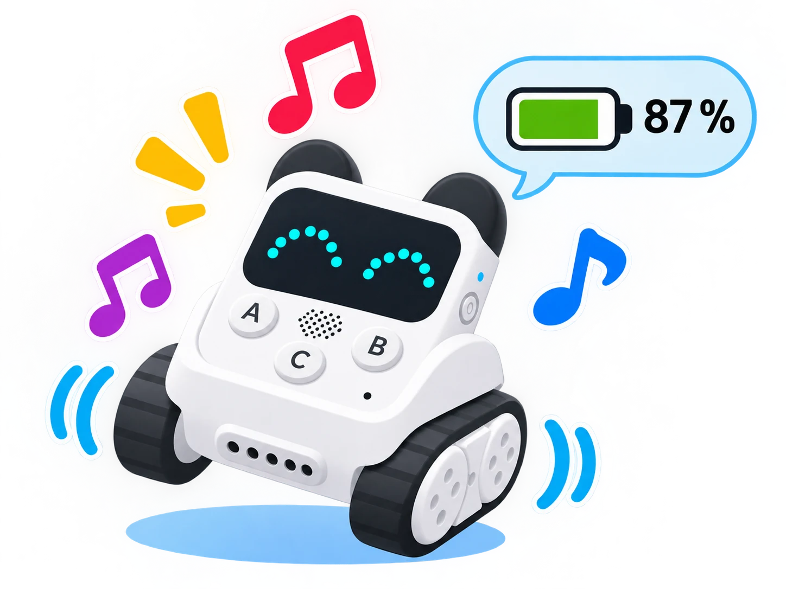

Codey Rocky: expressions, sons i energia
Personalitzar la matriu LED, programar sons i dansa i comprovar el nivell de bateria del robot.
🌱 Situació, repte i intenció
- Dibuixar i mostrar una expressió a la matriu LED de 16 × 8.
- Vincular una acció als botons i a l’indicador RGB.
- Crear una seqüència curta de tons o una melodia i activar una dansa programada.
- Consultar el nivell de bateria abans de fer una prova llarga.
🎯 Aprenentatges i vocabulari
- Matriu LED 16 × 8: dibuix d’icones o patrons propis.
- Botons programables de Codey i indicador RGB per a activar i comunicar estats.
- Altaveu integrat: tons, efectes o melodies disponibles en l’extensió del dispositiu.
- Motors d’eruga: moviment o dansa programada, executada en una zona lliure.
- Lectura de bateria disponible a mBlock; és un indicador d’estat, no una mesura de duració garantida.
🧰 Materials i preparació
- Un Codey Rocky de la dotació, amb les erugues lliures i espai per a girar sense colpejar objectes.
- Ordinador amb mBlock 5 i el dispositiu/firmware de Codey actualitzats segons les instruccions del centre.
- Plantilla de 16 × 8 píxels, cartolines de colors i targetes amb icones de resposta.
- Ampliacióun espai silenciós i un temporitzador per comparar la duració de la seqüència.
Connecteu Codey i confirmeu que la vista de blocs ofereix pantalla, botons, RGB i so. Si el bloc de bateria no apareix, anoteu l’estat indicat pel dispositiu o carregueu-lo abans de la prova; no deduïu un percentatge exacte a partir del temps d’ús. Manteniu el robot sobre una superfície plana i poseu el volum baix.
📅 Seqüència didàctica
Prepareu una expressió de 16 × 8
Desenvolupament del pas
Dibuixeu una expressió pròpia —una cara o un símbol— que es puga reconéixer sense color. Reproduïu-la amb el bloc de mostrar imatge i compareu la pantalla real amb el dibuix. Feu una segona versió amb només tres canvis de píxel i expliqueu què continua sent llegible.
Associeu una resposta al botó i al RGB
Desenvolupament del pas
Programeu el botó A perquè mostre la primera expressió i encenga l’indicador RGB amb un color triat. Feu que el botó B mostre una icona diferent. Després proveu una lògica d’estalvi: amb llum ambiental alta, el RGB queda apagat; amb poca llum, només s’encén quan el sensor de so supera el llindar que heu calibrat i s’apaga quan el so baixa. Repetiu cada prova tres vegades i comproveu que els botons no depenen de mantindre’ls premuts.
Afegiu un so o una melodia breu
Desenvolupament del pas
Després de la resposta visual, reproduïu un to o una seqüència curta amb els blocs de so que ofereix el dispositiu. Si la versió permet triar notes, alterneu dues notes; si només ofereix efectes, compareu dos sons disponibles. Afegiu una pausa perquè una pulsació no dispare una cadena de sons superposats. Manteniu una alternativa només visual.
Proveu una dansa controlada
Desenvolupament del pas
Afegiu una dansa o una seqüència de moviments predefinida a una activació separada. Poseu Codey Rocky al centre d’una àrea lliure, inicieu el programa amb el robot quiet i atureu-lo abans de canviar el muntatge. Si la versió instal·lada no inclou un bloc de dansa, construïu una seqüència pròpia amb dos girs curts i una pausa; identifiqueu-la com a programa de l’aula.
Registreu l’estat de la bateria
Desenvolupament del pas
Abans de la prova final, consulteu el bloc o indicador de nivell de bateria de mBlock i anoteu què mostra. Executeu la salutació tres vegades i torneu a consultar l’estat. Compareu la lectura sense interpretar diferències menudes com una predicció exacta d’autonomia. Si el robot es desconnecta o respon irregularment, carregueu-lo i repetiu la mateixa prova.

🧪 Evidències i avaluació
Feu tres execucions completes i registreu per a cadascuna l’expressió, la resposta RGB, el so, el moviment i l’estat de bateria abans de començar. Si una part falla, proveu-la sola abans de tornar a unir la seqüència. Compareu la versió amb so i la versió silenciosa i comproveu que les dues transmeten el mateix missatge.
Preguntes per comprovar
- Quina entrada activa cada resposta i quin component la mostra?
- Quins píxels són imprescindibles perquè l’expressió continue sent comprensible?
- El so o la dansa depenen d’un bloc oficial disponible en el vostre mBlock?
- Què podem concloure —i què no— d’una lectura de bateria abans i després de tres proves?
✅ Evidències d’aprenentatge
- Plantilla de píxels i programa de la salutació, amb la funció de cada botó identificada.
- Taula de tres execucions que compare les respostes visuals, sonores i motores.
- Registre de l’estat de bateria abans i després, amb una nota sobre els límits d’aquesta lectura.
- Versió accessible sense so o amb una alternativa visual equivalent.
♿ Participació, accessibilitat i seguretat
Permeteu expressar la resposta amb icona, color, so opcional o una targeta equivalent. No useu només el color per distingir estats i oferiu una alternativa silenciosa. Manteniu el robot allunyat de vores, cables i persones durant la dansa; no bloquegeu les erugues amb les mans mentre els motors estan actius. Si cal, feu aquesta part amb una animació de targetes sense moviment.
🔗 Referents i adaptació
Makeblock enumera els casos de pantalla emocional, RGB, sons, potenciòmetre, llum ambiental, bateria, sacsejada, postures, melodies i dansa, inclòs l’indicador RGB d’estalvi d’energia, i descriu les funcions de Codey Rocky. La lectura de bateria i els blocs de so depenen del dispositiu, firmware i versió de mBlock; les melodies i danses disponibles poden variar. Les lliçons de temps meteorològic i els jocs en línia depenen de serveis de xarxa externs;
el reconeixement de veu també requereix un servei extern i no és una funció autònoma del robot.